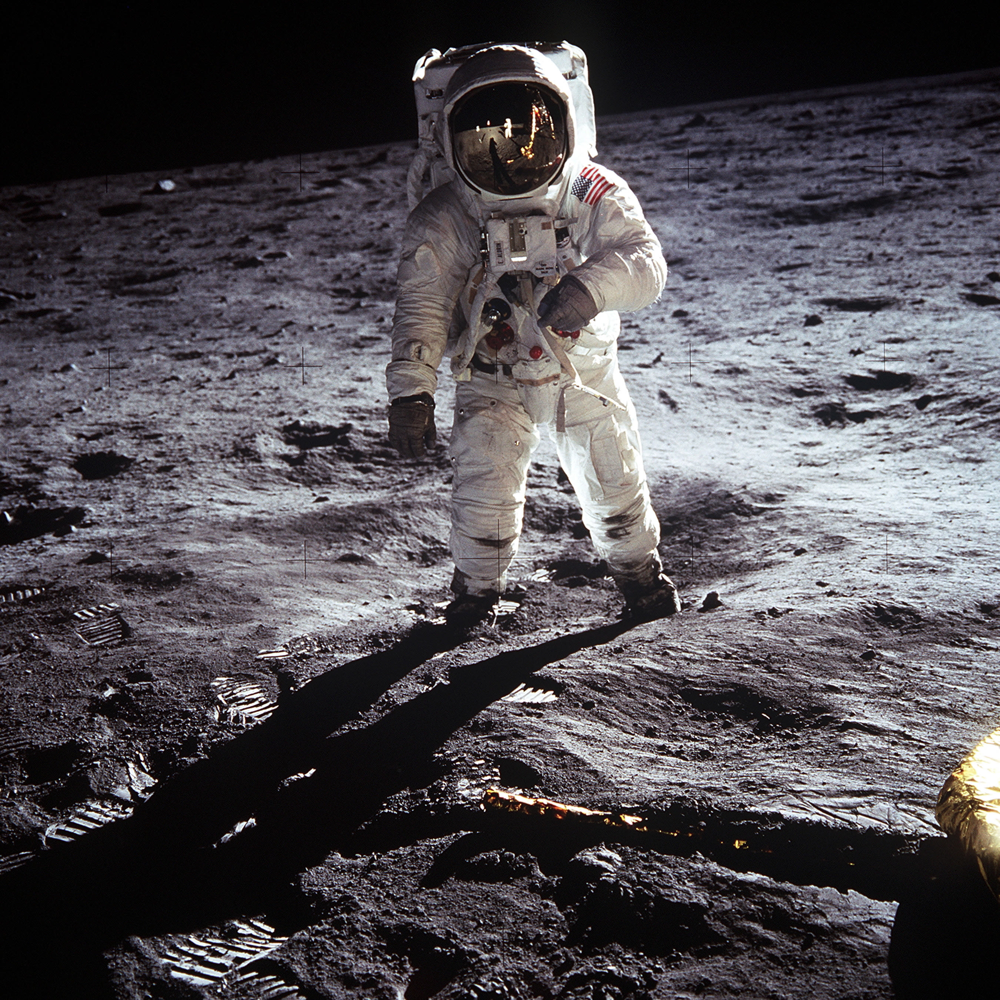

MOON
// apollo 11, 20 july 1969
Taken by Neil Armstrong.
20 July 1969
Look at the visor.
that's Armstrong
BUZZ
ALDRIN
ALDRIN
He had the camera.
Photo: Neil Armstrong / NASA, public domain (AS11-40-5903)
